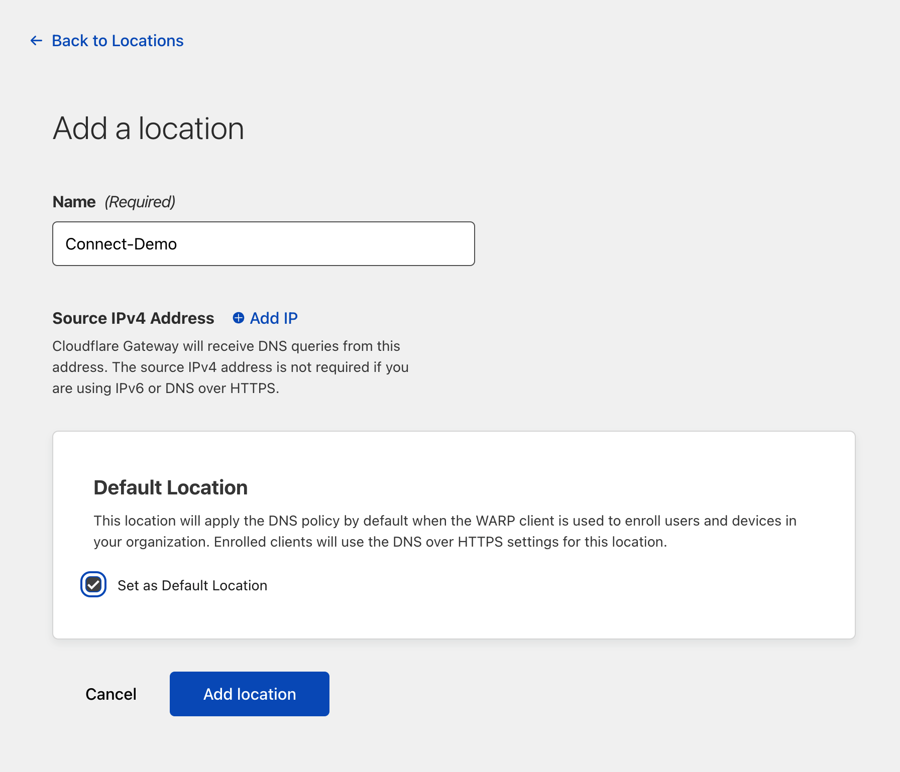
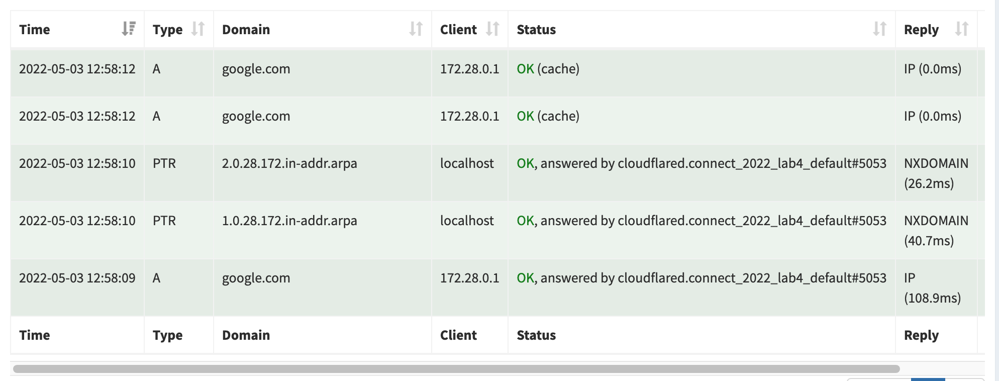
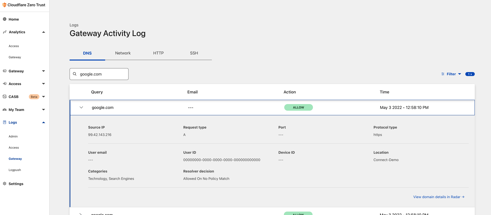
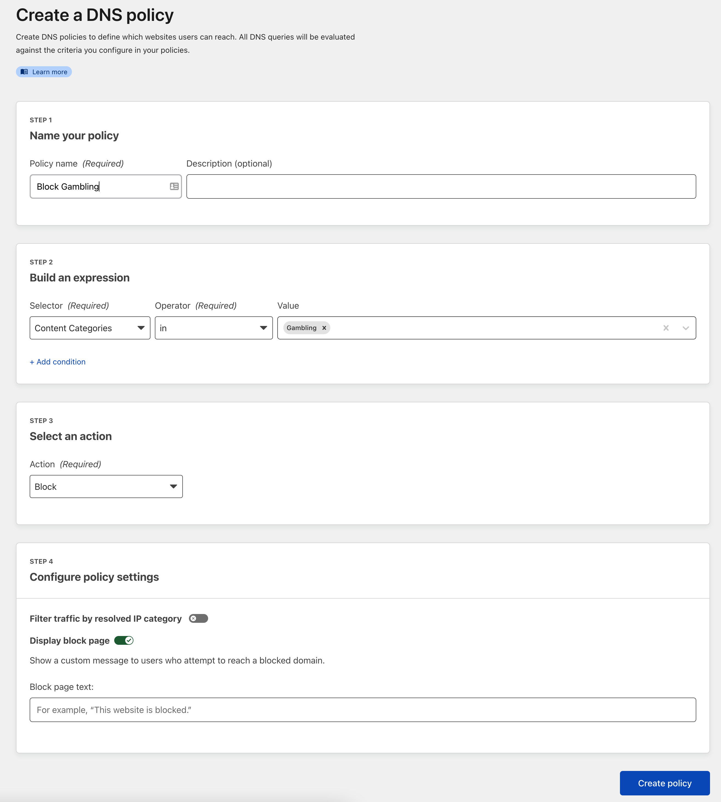

4. Cloudflare Zero Trust Gateway
Welcome to Lab 4 at Cloudflare Connect 2022 - This lab will focus on setting up a simple DNS forwarder to leverage Cloudflare Zero Trust Gateway’s DNS filtering on any network. By the end of this lab you will have:
Setup Cloudflare Tunnel as a DoH (DNS over HTTPS) Forwarder
Configured DNS based filtering in Cloudflare ZT Gateway
Built a ready to deploy Docker Compose file to deploy setup anywhere
Cloudflare Zero Trust Gateway is designed to keep your data safe from malware, ransomware, phishing, command & control, Shadow IT, and other Internet risks over all ports and protocols. Today we will only be setting up DNS based filtering but it can be used as a full Secure Web Gateway.
Learn More about Cloudflare Zero Trust Gateway!
Check out the Cloudflare Homepage to learn more
4.1. Setup Docker Environment
For flexible deployment we will be building this entire setup using Docker. Containers are an easy way build and deploy services on varying platforms - this means you can take the setup you build today on your local system and migrate it to a local home or lab environment with almost no configuration changes.
4.1.1. MacOS
To install Docker on MacOS we will again use brew if you have not already setup brew on your MacBook jump up to the MacOS setup section and install it.
Once Brew is installed, in a terminal window enter:
brew install docker
brew install docker-compose
Once installed validate that Docker is installed and running:
docker --version
No Version?
If you do not see a Docker version or the command errors you may need to start the Docker application first, this can be done by launching it from Application or Spotlight on your MacOS device.
4.1.2. Linux
Installation of the Docker can be done with the built in package managers on most all linux distributions - to cover common use cases the steps below are for Debian and CentOS
Debian, Ubuntu Linux, Raspberry Pi OS (apt)
Update apt packages
sudo apt-get update
sudo apt-get install \
ca-certificates \
curl \
gnupg \
lsb-release
Add the Docker GPG Key
curl -fsSL https://download.docker.com/linux/debian/gpg | sudo gpg --dearmor -o /usr/share/keyrings/docker-archive-keyring.gpg
Add the stable repo
echo \
"deb [arch=$(dpkg --print-architecture) signed-by=/usr/share/keyrings/docker-archive-keyring.gpg] https://download.docker.com/linux/debian \
$(lsb_release -cs) stable" | sudo tee /etc/apt/sources.list.d/docker.list > /dev/null
Install Docker Engine
sudo apt-get update
sudo apt-get install docker-ce docker-ce-cli containerd.io docker-compose-plugin
Once installed validate that Docker is installed and running:
docker --version
Fedora, CentOS, Red Hat Enterprise Linux (dnf)
Add the stable repo
sudo dnf -y install dnf-plugins-core
sudo dnf config-manager \
--add-repo \
https://download.docker.com/linux/fedora/docker-ce.repo
Install Docker Engine
sudo dnf install docker-ce docker-ce-cli containerd.io docker-compose-plugin
Once installed validate that Docker is installed and running:
docker --version
4.1.3. Windows
Installation of Docker can be done with powershell winget package manager. Open PowerShell and enter the following installation command:
winget install docker.dockerdesktop
If prompted enter Y to approve installation
Follow the onscreen prompts to complete installation
Install Prompts
If you get prompted to choose the type of installation the easiest method is to select “WSL2” - this will use Windows Subsystem for Linux to setup Docker environment
Once installed Launch docker application from desktop icon and validate that Docker is installed and running via powershell:
docker --version
Windows & MacOS
Once docker is installed you must launch it from the corresponding OS application launcher: Windows
Start → Docker Desktop
MacOS
Spotlight → Docker Desktop
Docker Setup Complete!
You have successfully setup Docker! Lets Get Started Deploying Cloudflare ZT Gateway!
4.2. Deploy DNS Server & Cloudflare Tunnel for DoH
With Docker running we can now pull down the template Docker Compose file that will allow us to quickly deploy a local DNS server (pi-hole) and Cloudflare DoH forwarder (Cloudflare tunnel) together.
Clone the repo that contains the Docker compose file
gh repo clone cf-tme/connect_2022_lab4
Move into the Directory that was just cloned
cd connect_2022_lab4
Once in the directory you should see a docker-compose.yml file open this file in your favorite text editor
Text Editor
VS Code is a versatile text editor that can be launched directly from the terminal using code
4.2.1. Understanding Docker Compose file
With the file open lets take a moment to break it down and understand it, The file is split up into two logical sections, one for each service we will be starting up
Pi-Hole Service
cloudflared Service
We will be using Pi-Hole as the local dns resolver, for those unfamiliar with Pi-Hole, it is a powerful dns server designed to sinkhole common ad serving domains to create a cleaner browsing experience for all connected devices.
Learn More!
To learn more about Pi-Hole check out the website
Pi hole is designed to be run on the Raspberry-Pi hardware platform but since we are building it in a container it can easily be ported to whatever platform you like.
In order for Pi-hole to resolve internet domains it will need to be configured with an upstream DNS server to resolve internet domain names - this is where the cloudflard service comes into play.
The cloudfalred service will act as an upstream resolver for Pi-Hole and use Cloudflare ZT Gateway (via DNS over HTTPS) to resolve internet domains - this means that not only are our internet DNS queries encrypted and secure, we can also customize policies on what kinds of traffic is allowed.
The below diagram will help visualize the traffic flow

Based on this you can see that once everything is done, the docker host will be the primary DNS server for the network.
4.2.2. Modify Docker Compose file
Take a closer look at the configuration in the Docker Compose file and read the comments to understand whats happening.
Now that you have reviewed the file you may have noticed there is a specific environment variable for the cloudflared service the TUNNEL_DNS_UPSTREAM this value will need to be taken from your Cloudflare Zero Trust Dashboard - Lets do it!
4.2.2.1. Setup Cloudflare ZT Location
To get a custom DNS over HTTPS endpoint for your Cloudflare Account lets start by logging into the dashboard
https://dash.teams.cloudflare.com
Once logged in you should be brought to the Welcome screen:

Additional Setup
If you are not brought directly into the Zero Trust Dashboard - you may have to go through the initial setup setups - be sure to choose the FREE plan when selecting a tier, once complete you should be brought to the above page
From here, on the right hand navigation select Gateway > Locations on the following screen press Add a location now you will be asked for some details as seen below:

All you need to do here is enter a name for the location. Since we are using DNS over HTTPS we do not need to define a source IPv4 Address.
REMOVE ANY AUTO-CREATED IPS
There will probably be an IP entered in the “Source IPv4 Address” make sure you delete it - This may cause issues for other attendees
Once created you will be given a DoH address for the location you just created - Take note of this as we will need it for our Docker Compose file

4.2.2.2. Edit Environment Variables with DoH
Returning to the Docker Compose file find the Environment Variables for the cloudflared service (line 16) and enter the DoH address from the pervious step
environment:
# DoH endpoint THIS SHOULD BE MODIFIED BASED ON GUIDE
- "TUNNEL_DNS_UPSTREAM=https://XXXXXX.cloudflare-gateway.com/dns-query"
4.2.3. Launch Containers
Once the file is saved launch the containers via docker compose:
docker-compose up -d
Errors Launching Containers
If you get an error claiming Cannot connect to the Docker daemon at unix:///var/run/docker.sock. Is the docker daemon running? you will need to launch the app from the application launcher
If successful you should see the following output
[+] Running 3/3
⠿ Network connect_2022_lab4_default Created 0.0s
⠿ Container cloudflared Started 0.4s
⠿ Container pihole Started 0.8s
Errors Launching Containers
If you have any issues launching the containers make sure that there are no other services on the local system listening on port 80 or 53 as it will break the port binding
Once running you should be able to reach the pihole administrator portal at:
http://localhost/admin
At the Pi-Hole Welcome screen press the login and enter the password defined in the Docker Compose file
Default Password
If you did not edit the file the password should be connect-2022

Once logged in navigate to the Settings on the left hand navigation pane, and then select DNS on the top row of tabs.
You should see that the Upstream DNS Servers have a single entry for our cloudflared container service.

cloudflared service IP
You may have a different IP address set for your DNS server but that is as expected, the value is dynamically linked to the cloudflared service by docker in the background
4.2.4. Test DNS Forwarding
We can now validate that DNS resolution is working on the new setup by quickly running an nslookup command
nslookup google.com localhost
This will ask the localhost (Pi-Hole DNS Server) for a resolution on google.com. We should get a result and now be able to dig into the logs to see the request was properly forwarded to Cloudflare.
First lets return to the Pi-Hole dashboard Here on the main dashboard we should see a few new queries - if we navigate to Query Log on the left navigation pane we should see that our initial DNS query was sent to our Cloudflare DoH forwarder on port 5053

To confirm the request made it to Our Cloudflare ZT Gateway we can return to dashboard
In the Cloudflare ZT dasbhoard navigate to Logs > Gateway and enter the domain you requested (in our case it was google.com). You should see a query log for it as well as confirmation that the Protocol type was HTTPS and the Location was our demo location we created earlier.

4.2.4.1. Create DNS Filtering Rule
Now that we have successfully passed traffic through to our Cloudflare Zero Trust Gateway we can write filtering policies to block access to specific domains.
In the Cloudflare ZT dashboard navigate to Gateway > Policies and select Create a policy
In the Policy Creation , lets write a policy to Block the category of Gambling.
The policy should have the following settings
Step 1 - "Block Gambling"
Step 2 - Selector "Content Categories" + "in" + "Gambling"
Step 3 - "Block"
Step 4 - Display Block Page "On"

4.2.4.2. Change System DNS Settings
In order to test our new filtering rule we must first redirect our DNS traffic to our new Pi-Hole DNS server. Each operating system has a different process - The steps are generally shown below
MacOS
Go to System Preferences. You can find it by pressing Command+Space on your Mac and typing System Preferences.
Click on the icon called Network.
Click Advanced.
Select the DNS tab. Remove any IP addresses that may be already listed and in their place add 127.0.0.1
Linux
Edit the resolve.conf file
sudo vim/etc/resolv.conf
Replace the nameserver lines with 127.0.0.1
Windows
Click on the Start menu, then click on Control Panel.
Click on Network and Internet.
Click on Change Adapter Settings.
Right click on the Wi-Fi network you are connected to.
Click Properties.
Select Internet Protocol Version 4.
Click Properties.
Click Use The Following DNS Server Addresses. Enter 127.0.0.1
4.2.4.3. Test New DNS Filtering Rule
With the system configured to send DNS to our new setup we can go ahead and try going to any gambling site - https://gambling.com
You should have gotten the Cloudflare Block Page!
LAB 4 COMPLETE!
You have successfully Completed Lab 4 - Cloudflare Zero Trust Gateway, now you have a ready to deploy docker compose file that you can take to any environment, even your own raspberry pi and start protecting your infrastructure with secure DNS.